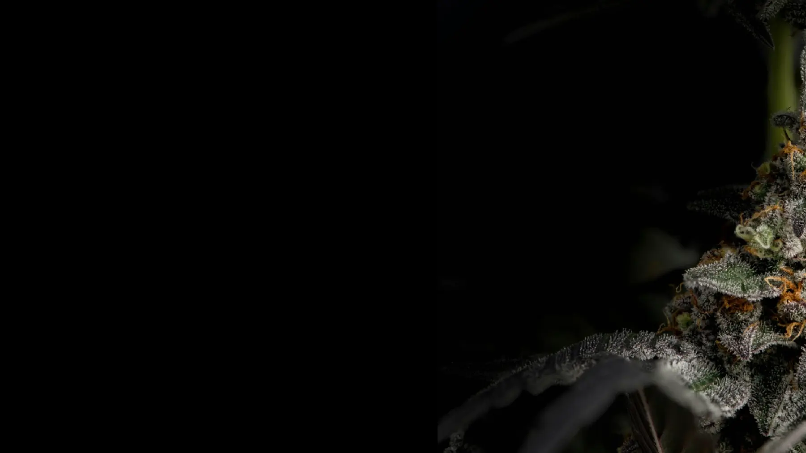

Local guides · 8 min read
Your Guide to Finding the Best Dispensary in Yonkers
A licensed dispensary in Yonkers has a New York State Office of Cannabis Management license number you can look up, sells only products that went through a state licensed lab, and asks for your ID before you get past the front desk. Anything that skips one of those is a sticker shop, not a dispensary.
That distinction matters more in Yonkers than in most of Westchester. Southwest Yonkers has a lot of storefronts with neon leaf signs and most are not licensed. The products in those shops are not tested, not tracked, and not legal to sell.
This guide covers how to check a shop’s license in about a minute, what selection and pricing look like in a legal Yonkers store, and what you will find at 471 McLean Ave.
What to know up front

- Toke‘s Yonkers store is at 471 McLean Ave, Yonkers, NY, phone 914-207-1545, open 10:00 AM to 10:30 PM Sunday through Thursday and 10:00 AM to 11:00 PM Friday and Saturday.
- The store operates under New York State Office of Cannabis Management license OCM-RETL-25-000418. Our Spring Valley store is OCM-RETL-25-000344.
- You have to be 21 or older with a valid government photo ID to get past the front desk, every visit, no exceptions and no medical card required.
- New York dispensaries take cash and debit only. Credit cards are off the table at every dispensary in the state because of federal banking rules, not store policy.
- New York’s adult use purchase limit is 3 ounces of flower or 24 grams of concentrate per person per day.
How do you tell a licensed dispensary from a sticker shop in Yonkers?

A licensed store checks ID at the door before you see any product. Unlicensed shops often let you walk straight to a display case, which is the fastest tell there is.
A licensed store posts its OCM license number, usually on the front window or near the register. It is a string like OCM-RETL-25-000418. If nobody can produce one when you ask, that answers your question.
A licensed store sells packaged product with a New York compliant label: THC and CBD content, the lot number, the licensed cultivator, a QR code linking to lab results, and the New York THC symbol. Loose product scooped from a jar is not legal retail in this state, and neither is anything in a candy wrapper or a cartoon character bag.
Our longer post on the real difference between a dispensary and a smoke shop goes through this in more detail, including what happens to the product supply chain in each case.
How to check a Yonkers dispensary license in about a minute

The New York State Office of Cannabis Management keeps a public verification tool at cannabis.ny.gov that lets you look up any address and see whether a licensed adult use retailer operates there. Type in the address, and you either get a match or you do not.
Do this before you walk into a shop you have not used before. It takes less time than reading a menu, and it is the only source that settles the question. Reviews, signage, and how busy a place looks tell you nothing. If a shop shows you a license number, the same OCM site confirms the number belongs to that address, since a real number pinned to a different address is a known trick.
What does a legal dispensary in Yonkers actually stock?

Flower in eighths, quarters, and larger jars, from New York cultivators. Every jar was grown, dried, and cured inside the state, because New York does not allow product to cross state lines.
Pre rolls in singles, two packs, and multi packs, plus infused cones with hash, live resin, or distillate added. Vapes, meaning 510 thread cartridges and all in one disposables, sorted by extract type. Edibles, which in New York means gummies, chocolates, and beverages, dosed in 10 mg units with a 100 mg cap per package.
Concentrates cover live rosin, badder, sauce, and hash. These move slower than the other categories and every legal store carries some. Our rundown of the best cannabis products in Westchester goes category by category on what is worth the money.
One thing a legal Yonkers store cannot stock: anything untested. Every item on our shelves has a Certificate of Analysis behind it from a New York licensed lab. Our post on what lab tested cannabis actually means walks through what that document says.
What should you expect to pay at a dispensary in Yonkers?

Legal cannabis in New York costs more than the unlicensed market, and there is no honest way around that. New York applies a 9 percent state excise tax and a 4 percent local tax on adult use sales, and the licensed supply chain is more expensive to run.
What you get for the difference is a lab result, a known cultivator, accurate dosing, and recourse if something is wrong. That trade is worth it to some people and not others.
Within the legal market, prices in Yonkers run close to what you would pay elsewhere in lower Westchester. The real variation is by tier. Value eighths and top shelf jars can sit far apart on the same shelf, and the gap is worth paying on some strains and not on others.
Standing discounts are worth asking about. Veterans get 15 percent off with one time proof, a DD-214 or a VA ID. New York medical cardholders get 10 percent off. First orders get a welcome discount applied at checkout with no code. Weekly drops and happy hour pricing go up on Instagram at @nytokes, and our deals page for Yonkers and Spring Valley tracks the recurring ones.
What is the McLean Ave store like inside?

It is a counter and a floor, not a waiting room. You show ID at the front, walk in, and look at what is out. Somebody will ask what you are after and leave you alone if you are browsing.
The menu board covers what is in stock that day, and the live Yonkers menu is the same list. Stock changes weekly, so what was on the board last Friday may be gone.
We do not carry everything. Most of what gets offered to us does not make the shelf, and the budtenders will tell you when something is not worth what it costs. If you have never been into a dispensary, what to expect on your first visit covers the sequence from the door to the register.
You can also order ahead and pick up, or use curbside if you would rather not come in.
Where is 471 McLean Ave and where do you park?

The store sits on McLean Avenue in southwest Yonkers, on the strip that runs along the Yonkers/Bronx city line. McLean is the main commercial run on that side of the city, and it goes east to west between Riverdale Ave on the west end and the Bronx River Road area on the east.
Parking is street parking on McLean and on the residential side streets running north off it. Weekday afternoons are usually easy. Friday and Saturday evenings are tight along the strip, and the side streets are the better bet.
Coming from the rest of Yonkers, Central Park Avenue and South Broadway both feed down toward McLean, and the Saw Mill River Parkway and the Bronx River Parkway are both a few minutes away. From Bronxville, Tuckahoe, Mount Vernon, and the rest of lower Westchester, the Bronx River Parkway is the straightest run down, and Central Park Avenue is the slower one with everything else on it.
Does the Yonkers store deliver?

Yes, across lower Westchester. You get a real ETA and a text from the driver rather than a four hour window.
The delivery minimum is $75. Delivery is free on orders of $75 or more. The person who placed the order has to accept it with a valid photo ID, and drivers cannot hand an order to a roommate, a doorman, or a neighbor. Some drivers carry PIN debit terminals, but bring cash to be sure.
How the whole process works, including what happens after you hit submit, is covered in weed delivery in Yonkers and Westchester.
Frequently asked questions

Is there a licensed dispensary in Yonkers? Yes. Toke at 471 McLean Ave is licensed by the New York State Office of Cannabis Management under OCM-RETL-25-000418, open 10:00 AM to 10:30 PM Sunday through Thursday and 10:00 AM to 11:00 PM Friday and Saturday. You can check any Yonkers address against the OCM’s public verification tool at cannabis.ny.gov before you go.
How do I know if a Yonkers weed shop is legal? Check the address on the OCM verification tool at cannabis.ny.gov. A licensed shop also checks your ID before you see product, posts an OCM license number, and sells only New York compliant packaging with a lot number and a QR code linking to lab results.
Do I need a medical card to buy cannabis in Yonkers? No. New York adult use sales are open to anyone 21 or older with a valid government photo ID. A New York medical card is not required, though cardholders get 10 percent off at Toke.
Can I pay with a credit card at a Yonkers dispensary? No. No dispensary in New York accepts credit cards, because cannabis is still federally illegal and card networks will not process the transactions. Bring cash or a debit card.
How much can I buy in one visit? New York’s adult use limit is 3 ounces of flower or 24 grams of concentrate per person per day. That is far more than a typical purchase, so most shoppers never get close.
What are the store hours in Yonkers? From 10:00 AM to 10:30 PM Sunday through Thursday and 10:00 AM to 11:00 PM Friday and Saturday at 471 McLean Ave. The Spring Valley store at 2 S Central Ave runs 10:00 AM to 11:00 PM daily.
Does Toke deliver in Yonkers? Yes, from McLean Ave, with a $75 minimum. Delivery is free on orders of $75 or more. You have to be there with ID to accept it yourself.
Come by, or order ahead
Check the live Spring Valley menu or the Yonkers menu linked above, order for pickup or delivery, or walk in and ask what came in this week.
Yonkers: 471 McLean Ave, Yonkers, NY. 914-207-1545. Open 10:00 AM to 10:30 PM Sunday through Thursday and 10:00 AM to 11:00 PM Friday and Saturday. Spring Valley: 2 S Central Ave, Spring Valley, NY. 845-406-3004. Open daily 10:00 AM to 11:00 PM.
Bring a government photo ID showing you are 21 or older, plus cash or a debit card. Delivery runs from both stores with a $75 minimum. Delivery is free on orders of $75 or more. Our breakdown of New York cannabis laws in 2026 covers what you can and cannot buy before you shop.
Keep reading
More from the blog
Cannabis and Work: How New Yorkers Are Using Cannabis Responsibly
For a long time, cannabis and professionalism were treated as opposites. One belonged to basements and back alleys; the other to offices and…

Strongest Weed in Westchester: High THC Flower Guide
The strongest weed in Westchester is whichever lot tested highest the week you walked in, and that changes constantly. The flower that actually hits…

How Our Budtenders Help You Find the Right Product (Without Pressure)
One of the first things people say when they walk into Toke Cannabis is something like:
Two stores · open 7 days
Order tonight, pick it up in minutes
Order online for in-store pickup, curbside pickup, or delivery across Westchester and Rockland. Free delivery on orders of $75 or more.